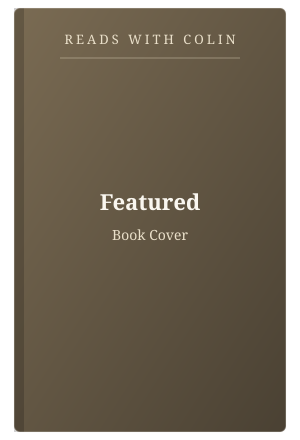
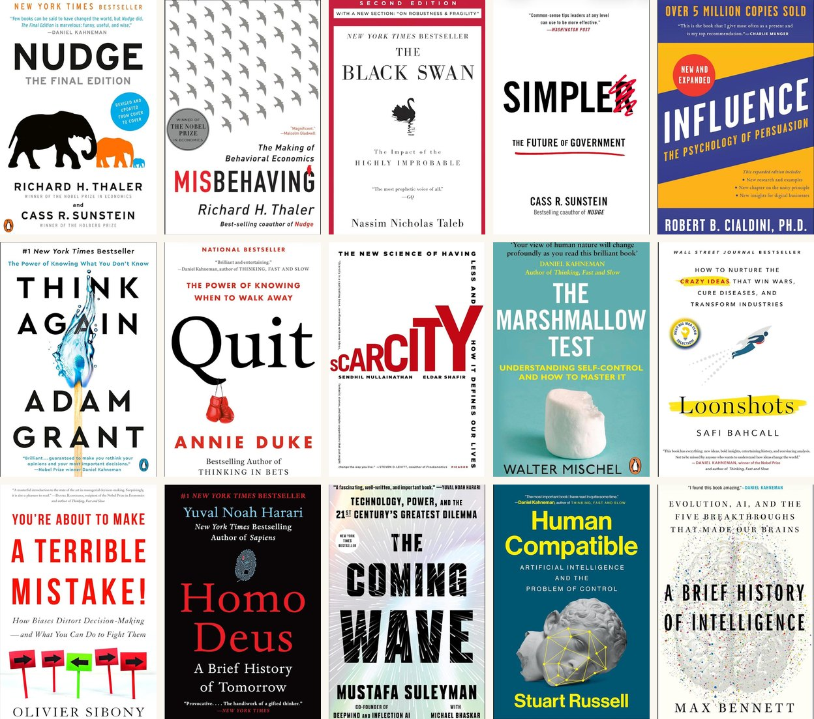
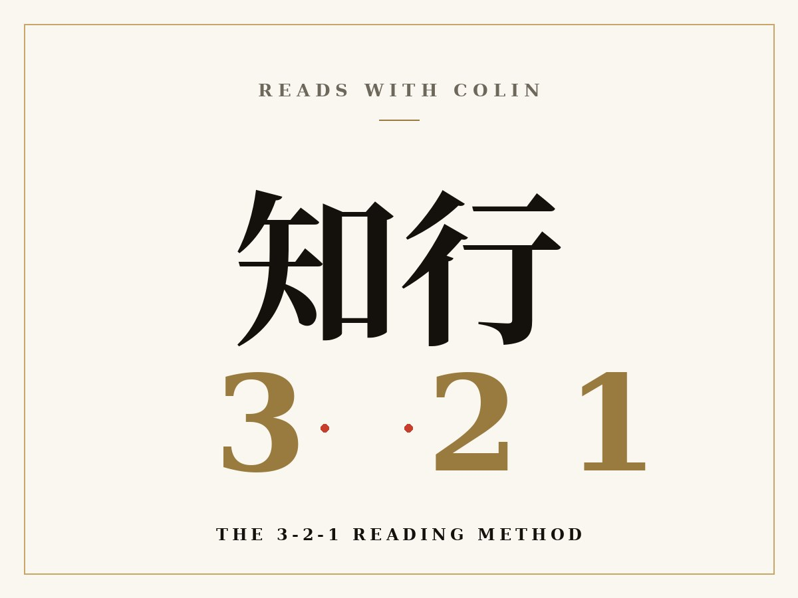
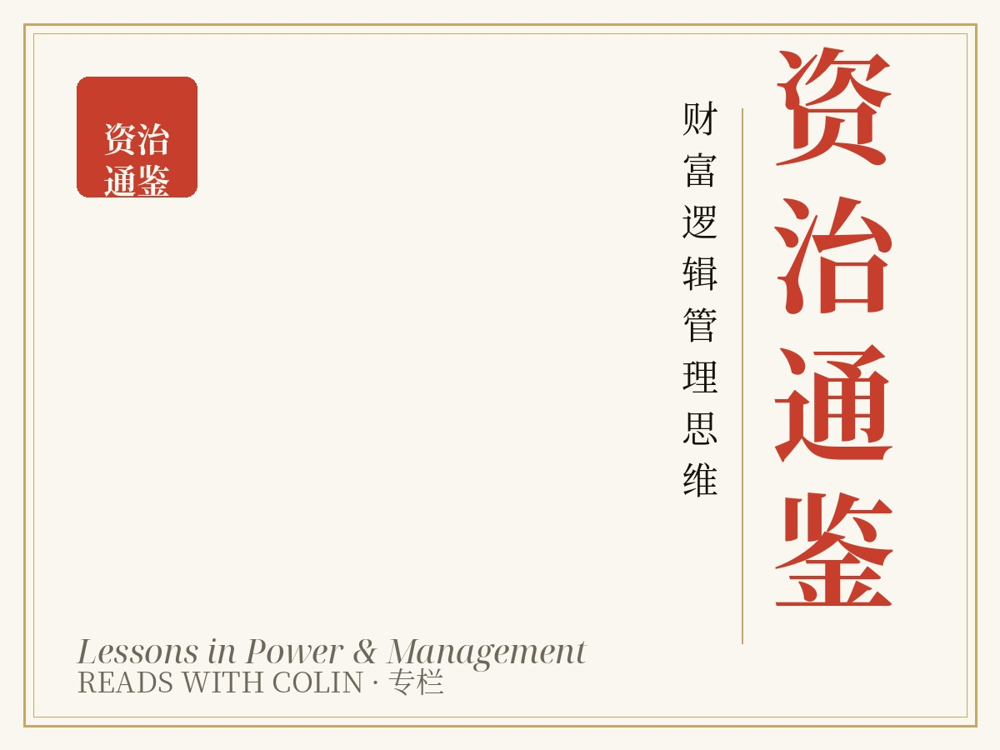
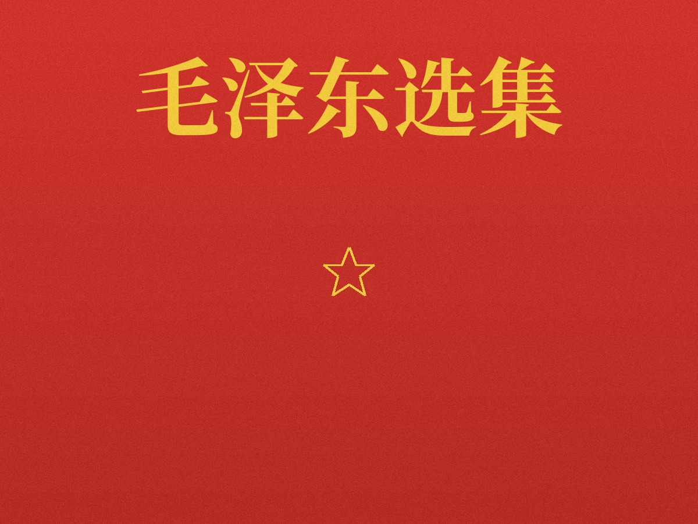

Latest最新 · RWC #001

Loading…加载中…
…
Read the letter →阅读全文 →
One idea, five minutes, every Thursday.读书不是逃避世界，是带上更好的眼睛再回来。
Learn to know; forget to transcend; practice to renew.学而知之 · 忘而破之 · 习而新之
Opening Substack — finish your subscription in the new tab ↗正在打开 Substack，请在新标签页完成订阅 ↗
No spam, unsubscribe anytime无广告 · 可随时退订

3 ideas, 2 quotes, 1 question every issue.每次 3 个观点、2 句名言、1 个提问。
Three ideas from ColinColin 的 3 条思考
Two quotes from books2 段书中引文
One question for you1 个问题




— books read, in Chinese and in the original English.每一本都是亲自读完的书 · 共 — 本
微信公众号 · 小Lin思考
微信扫码关注 / Scan to follow